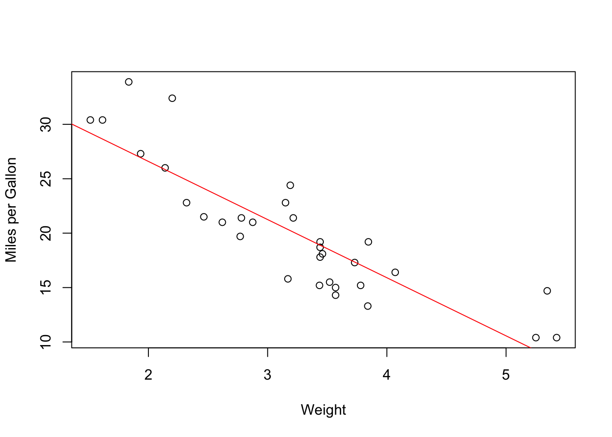
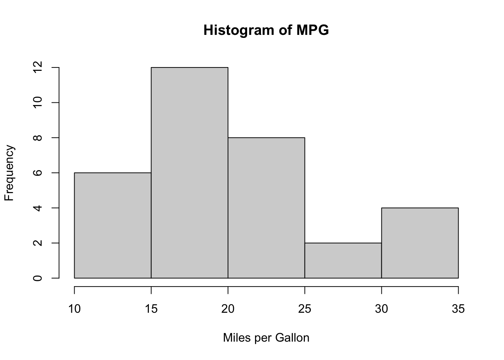

Code
data(mtcars)
cov(mtcars$wt, mtcars$mpg) # Covariance between weight and mpg[1] -5.116685Code
cor(mtcars$wt, mtcars$mpg) # Correlation between weight and mpg[1] -0.8676594
In statistics, variables are characteristics that can be measured or observed and can vary among different subjects or units.

Categorical variables place individuals or items into groups or categories.
Examples: - Gender (Male, Female, Other) - Blood Type (A, B, AB, O) - Education Level (High School, Bachelor’s, Master’s, PhD)

Quantitative variables take numerical values and represent some kind of measurement.
Examples: - Height (in centimeters or inches) - Temperature (in Celsius or Fahrenheit) - Income (in dollars or other currency)

Both variance and standard deviation measure how spread out the data points are from the mean.
Variance: The average of the squared differences from the mean.
Standard Deviation: The square root of the variance, expressed in the same units as the original data.
Interquartile Range (IQR): The range between the 25th and 75th percentiles, representing the middle 50% of the data.

Mean: The average of all values, calculated by summing all values and dividing by the count.
Median: The middle value when data is ordered from smallest to largest.
Mode: The value that appears most frequently in the dataset.
When analyzing data, it’s often useful to be able to investigate the relationship between two numeric variables to assess trends. For example, you might expect height and weight observations to have a noticeable positive relationship—taller people tend to weigh more. Conversely, you might imagine that handspan and length of hair would have less of an association. One of the simplest and most common ways such associations are quantified and compared is through the idea of correlation, for which you need the covariance. The covariance expresses how much two numeric variables “change together” and the nature of that relationship.
Let’s calculate covariance and correlation using the built-in mtcars dataset.
data(mtcars)
cov(mtcars$wt, mtcars$mpg) # Covariance between weight and mpg[1] -5.116685cor(mtcars$wt, mtcars$mpg) # Correlation between weight and mpg[1] -0.8676594Negative correlation: as weight increases, mpg decreases.
plot(mtcars$wt, mtcars$mpg, xlab = "Weight", ylab = "Miles per Gallon")
abline(lm(mpg ~ wt, data = mtcars), col = "red") # Regression line
Using the mtcars dataset for demonstration.
mean(mtcars$mpg) # Mean[1] 20.09062median(mtcars$mpg) # Median[1] 19.2var(mtcars$mpg) # Variance[1] 36.3241sd(mtcars$mpg) # Standard Deviation[1] 6.026948IQR(mtcars$mpg) # Interquartile Range[1] 7.375hist(mtcars$mpg, main = "Histogram of MPG", xlab = "Miles per Gallon")
Pearson’s sample correlation coefficient ρxy is computed by dividing the sample covariance by the product of the standard deviation of each data set.

Some Correlation Example:

sessionInfo()R version 4.5.1 (2025-06-13)
Platform: aarch64-apple-darwin20
Running under: macOS Tahoe 26.1
Matrix products: default
BLAS: /Library/Frameworks/R.framework/Versions/4.5-arm64/Resources/lib/libRblas.0.dylib
LAPACK: /Library/Frameworks/R.framework/Versions/4.5-arm64/Resources/lib/libRlapack.dylib; LAPACK version 3.12.1
locale:
[1] en_US.UTF-8/en_US.UTF-8/en_US.UTF-8/C/en_US.UTF-8/en_US.UTF-8
time zone: Asia/Shanghai
tzcode source: internal
attached base packages:
[1] stats graphics grDevices utils datasets methods base
loaded via a namespace (and not attached):
[1] htmlwidgets_1.6.4 compiler_4.5.1 fastmap_1.2.0 cli_3.6.5
[5] tools_4.5.1 htmltools_0.5.8.1 rstudioapi_0.17.1 yaml_2.3.10
[9] rmarkdown_2.29 knitr_1.50 jsonlite_2.0.0 xfun_0.52
[13] digest_0.6.37 rlang_1.1.6 evaluate_1.0.4